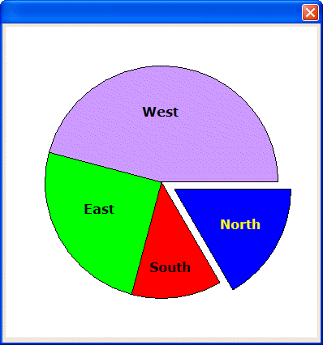

FILL_PIE()
Syntax
FILL_PIE( XCenter as N, YCenter as N, Radius as N, Degrees_Width as N [, Degrees_Start as N [, Explode as N ]] )
Argument | Description |
XCenter | The horizontal coordinate of the center of the circle. |
YCenter | The vertical coordinate of the center of the circle. |
Radius | The radius of the circle. |
Degrees_Width | The width of the slice. The range is 0 to 360 degrees. |
Degrees_Start | Optional. Default = 0. The starting location of the slice. The range is 0 to 360 degrees. |
Explode | Optional. Default = 0. The number of inches to remove the slice from the center of the circle. |
Description
The FILL_PIE() function draws a "slice of a pie". The fill color is the current brush color. The border color is the current pen color. Compare to the INNER_PIE()and PIE()functions.

Supported By
Alpha Five Version 5 and Above
Limitations
Used only in the Code sections of UI_BITMAP_DRAW(), UI_SCREEN_DRAW(), and UI_PRINTER_DRAW().
Example
ui_bitmap_create("test",4,4) ui_bitmap_draw("test",<<%code% inner_Rect(0,0,4,4) set_pen("white") set_brush("blue") fill_pie(2, 2, 1.5, 60, 0, .2) set_brush("red") fill_pie(2, 2, 1.5, 45, 60, 0) set_brush("green") fill_pie(2, 2, 1.5, 90, 105, 0) set_brush("lavendar") fill_pie(2, 2, 1.5, 165, 195, 0) set_font("Verdana,12,b", "Black", "Lavendar") text("West", 1.75, 1) set_font("Verdana,12,b", "Black", "green") text("East", 1, 2.25) set_font("Verdana,12,b", "Black", "red") text("South", 1.85, 3) set_font("Verdana,12,b", "White", "blue") text("North", 2.75, 2.45) %code%) ui_dlg_box("","{image=test}") |
See Also